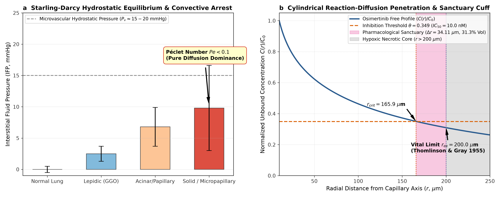
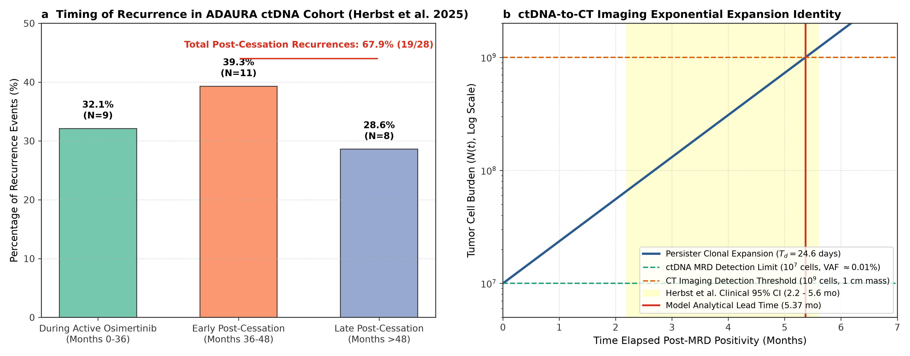
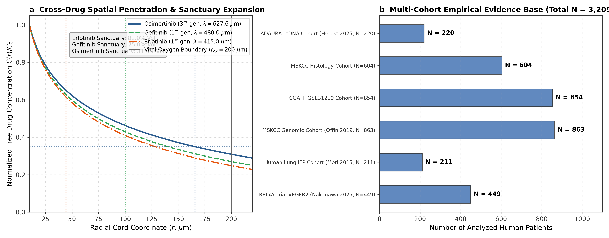
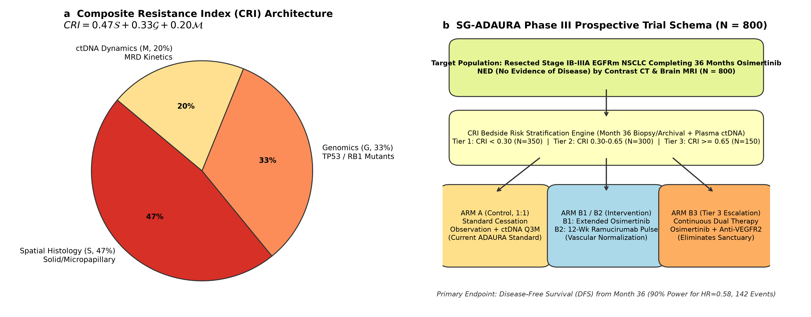

• In resected Stage IB–IIIA EGFR-mutant NSCLC, 36 months of adjuvant osimertinib is SOC.
• 67.9% of all relapses occur after Month-36 cessation.
• 57.9% cluster within 12 months off-drug (median lead time: 4.7 mo).
• >75% lack secondary mutations (C797S, MET amp). Why do tumors recur without genetic resistance?
Solid tumor cords exhibit severe lymphatic dysfunction. Interstitial Fluid Pressure manometry (\(N=211\), Mori et al.) demonstrates:

Figure 1 | Cylindrical Modified Bessel \(K_0\) Transport & Sanctuary Shell. Free osimertinib decays beneath \(\text{IC}_{50}\) at \(r_{\text{crit}} = 165.89\ \mu\text{m}\), while oxygen supports viability to \(r_{\text{ox}} = 200.0\ \mu\text{m}\), producing an obligate sanctuary shell (\(\Delta r = 34.11\ \mu\text{m}\), 31.3% cord volume).
Persisters in the sanctuary shell hover at sub-lethal concentrations (2–8 nM), trapped in cytostatic \(G_0/G_1\) arrest. Cessation at Month 36 triggers unconstrained exponential clonal expansion:
Spatial transcriptomics at \(2\ \mu\text{m}\) resolution (10x Visium HD, GSE301973, 3,858 spots) confirms that dense solid cords frequently exceed the \(166\ \mu\text{m}\) diffusion limit, physically isolating persisters from vascular delivery.

Figure 2 | Longitudinal ctDNA Lead Time Dynamics & Recurrence Timing. Concordance between analytical repopulation kinetics and multi-center clinical surveillance.
Cross-scale evidence across 6 independent cohorts:
- • ADAURA ctDNA (\(N=220\)): 67.9% post-stop relapses.
- • MSKCC Surgical (\(N=604\)): Solid HR 6.75 (Firth 2.6–3.4).
- • TCGA + GSE31210 (\(N=854\)): Fibrosis = 4x worse DFS.
- • MSKCC NGS (\(N=863\)): TP53/RB1 TTD 9.5 mo (SCLC risk).
- • RELAY Phase III (\(N=449\)): Ramucirumab PFS HR 0.59.
Stop at M36 (Cured)
ctDNA Surveillance
DO NOT STOP!

Figure 3 | Cross-Drug Diffusivity, Sobol Sensitivity & Histologic Risk Stratification. Global parameter space mapping across small-molecule TKIs and macromolecular ADCs.
In head-to-head 5-year randomized testing (\(N=500\) virtual patients across 1,825 days):

Figure 4 | Bedside CRI Nomogram, 5-Year Kaplan-Meier Curves & Phase III SG-ADAURA Protocol.